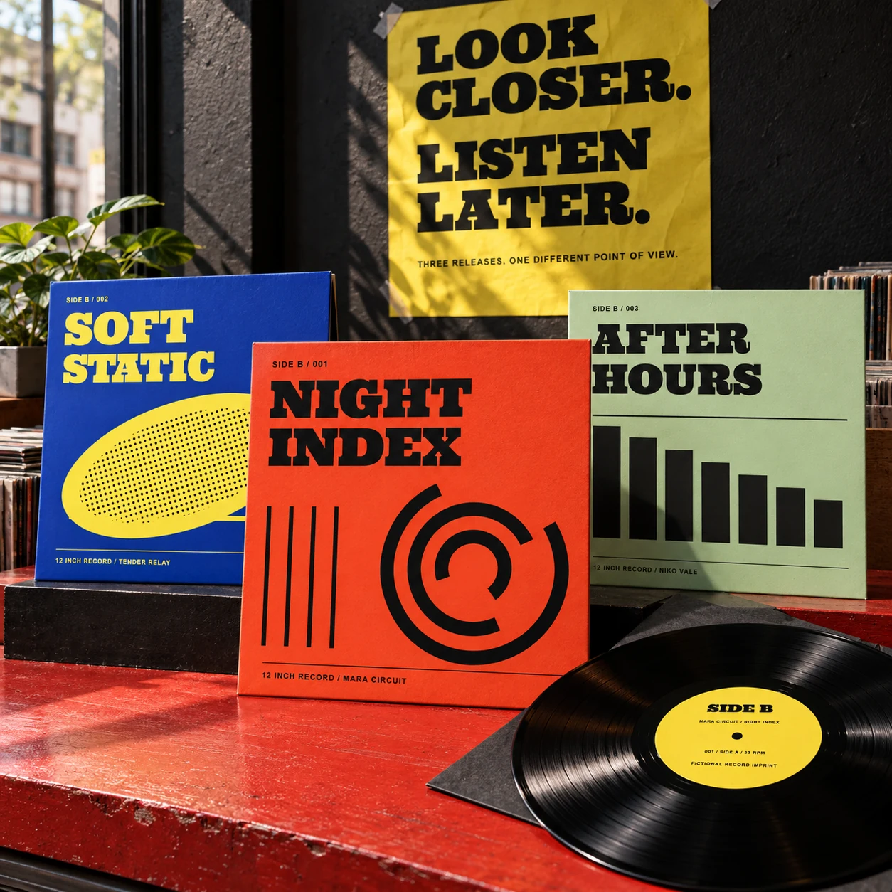
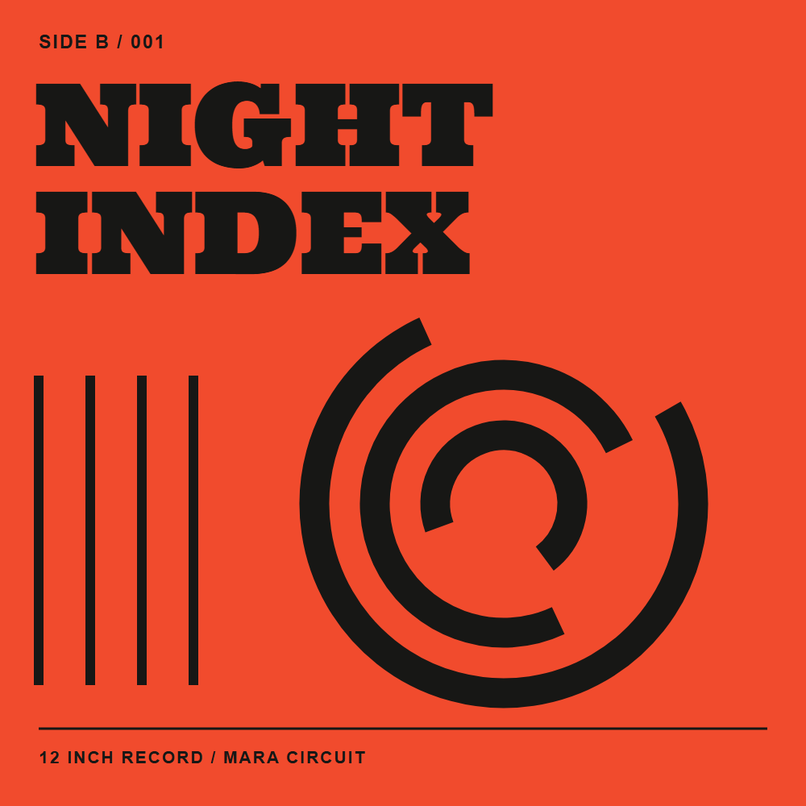
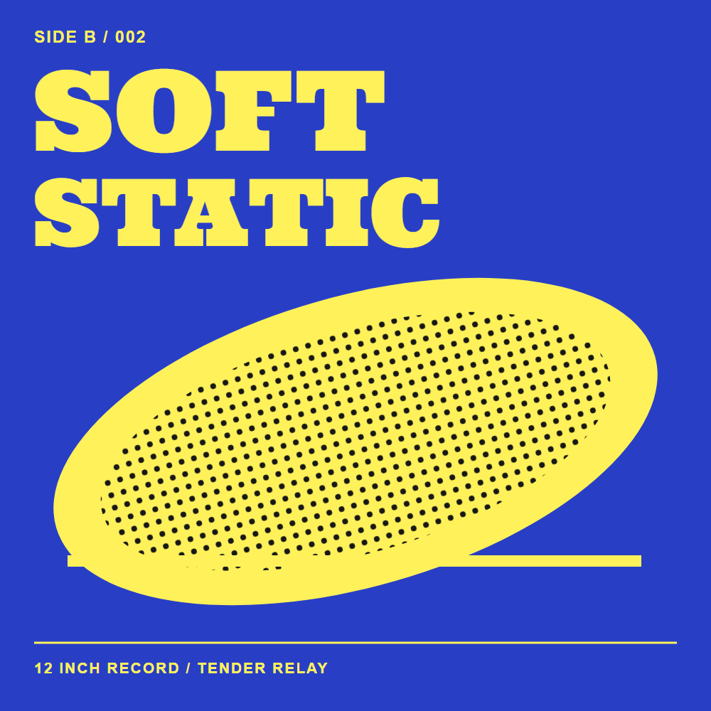
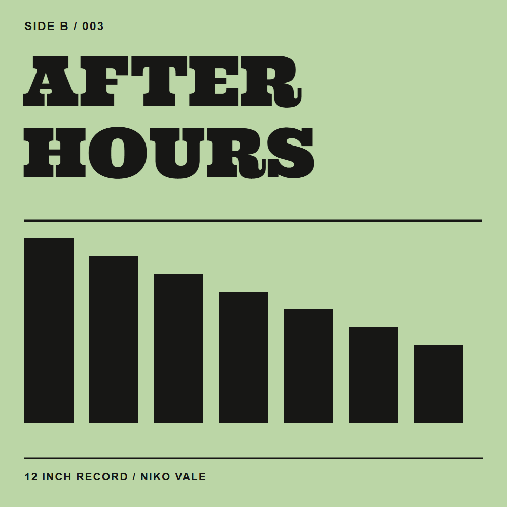
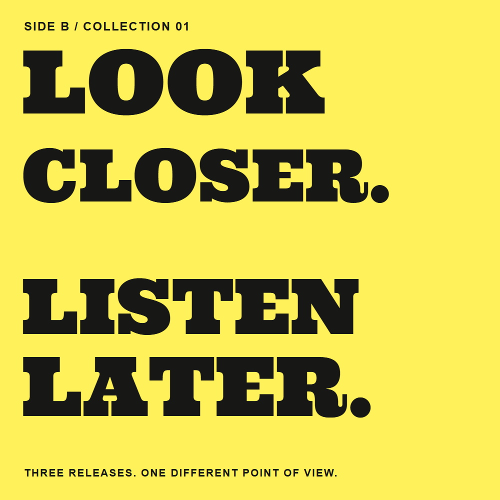
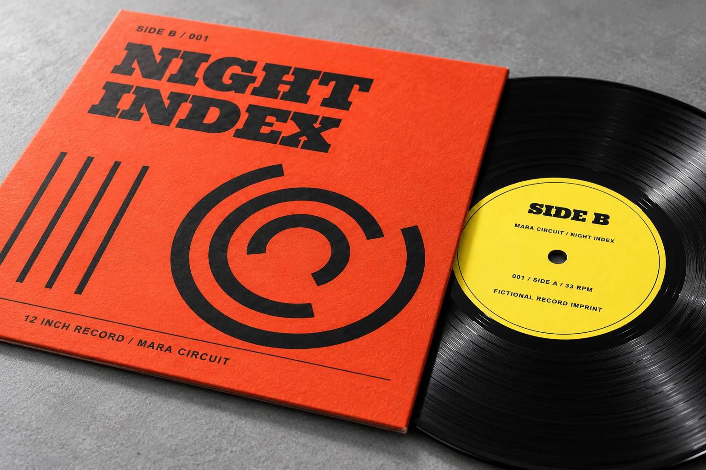
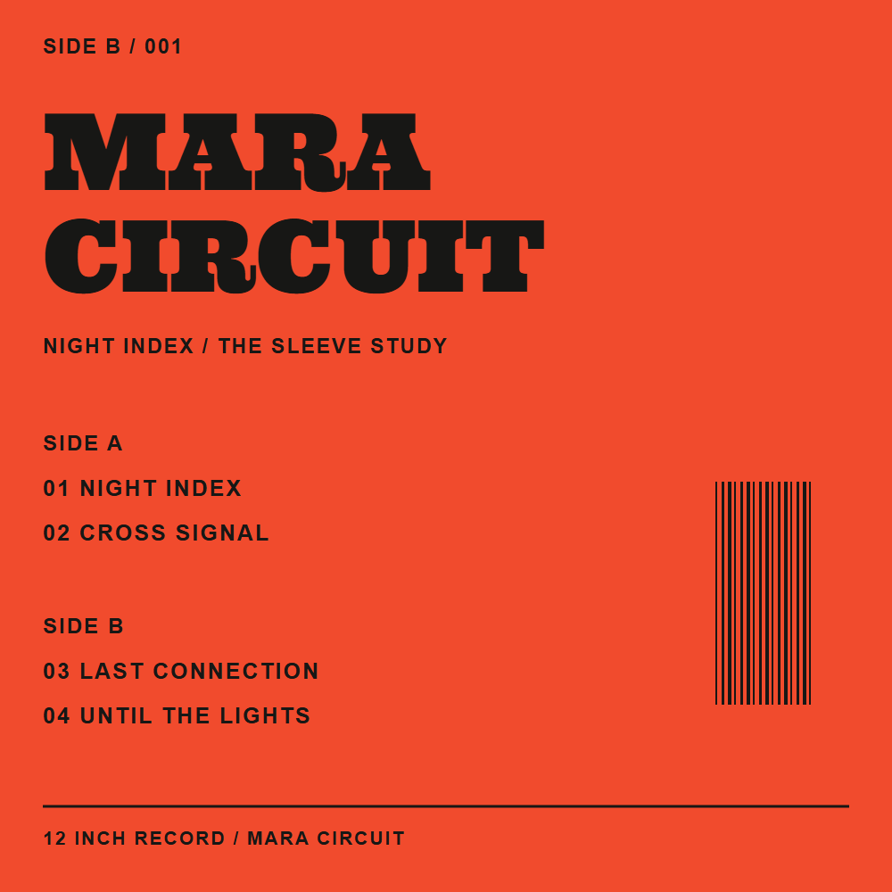
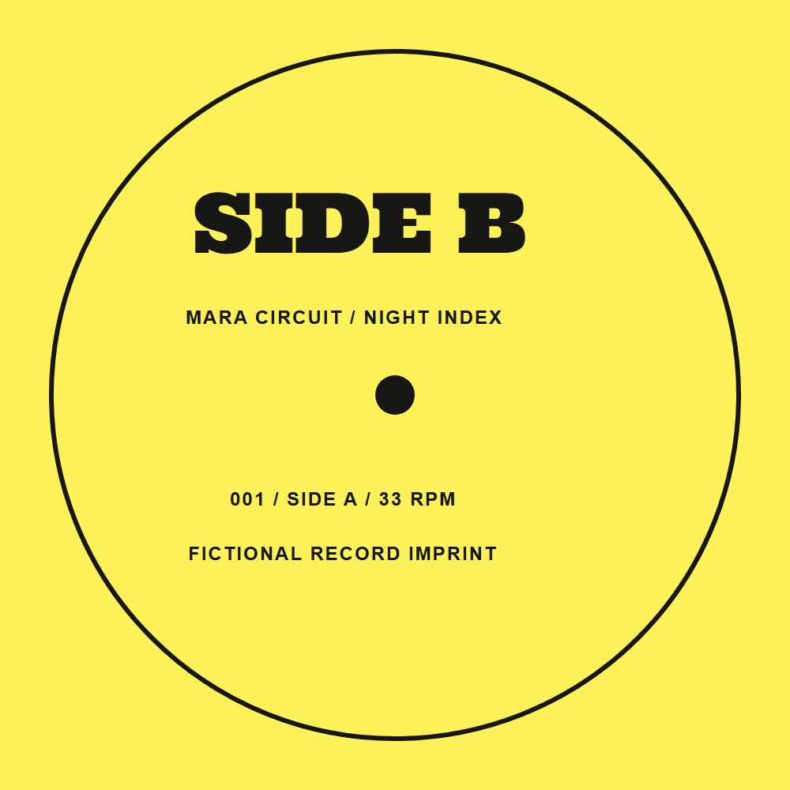
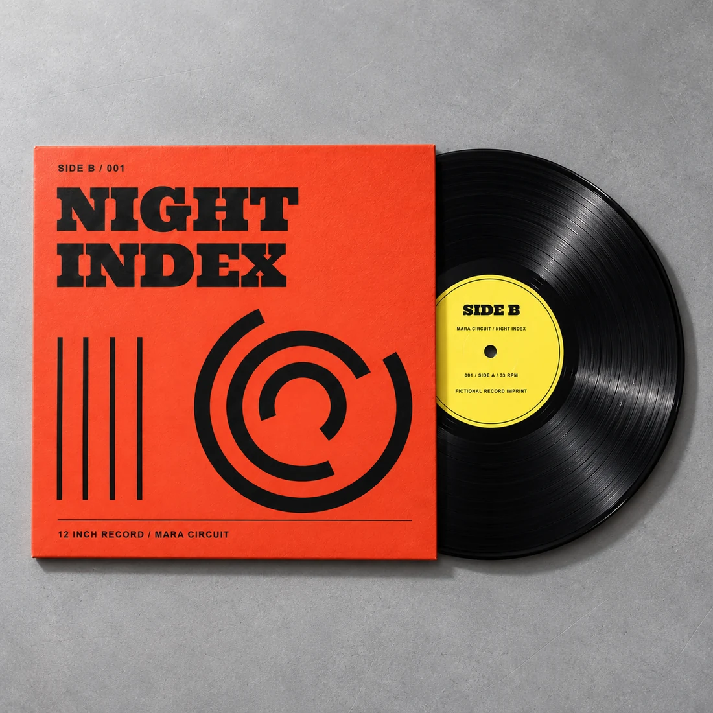

SIDE B / Records & cover design
Fictional imprintSelf-initiated concept / 2026
SIDE B.
A record collection with something to say before the needle drops. Three original sleeves, a print-led identity and a storefront built for looking closer.
Explore the storefront
01 / The brief
A small label.
A loud shelf.
The fictional shopper is a visually curious collector: someone who wants to browse a compact release wall, inspect the sleeve and choose a physical format. The task was to make those decisions clear while giving each cover enough room to have a point of view.
The concept uses only three invented artists and releases. It avoids chart positions, artist collaborations, testimonials and other borrowed proof. The design has to earn attention through the collection itself.
A streaming-player interface was rejected because no recorded audio exists. A beige luxury store was rejected because its quiet uniformity would suppress the differences between releases.
02 / The cover system
Same imprint.
Different frequencies.
One margin system, one slab voice, one catalogue structure. Each record changes the graphic rhythm and its colour field. The motifs suggest musical character without claiming that any music has been produced.



03 / Identity & typography
Poster volume.
Counter clarity.
Ultra's wide slab serifs turn the identity into a compact piece of signage. Its dense silhouettes carry through the covers, the campaign and the storefront hero. Chivo supplies the quieter information layer: artists, formats, quantities and prices.
Yellow identifies the imprint. Orange, cobalt and green identify releases. Ink black gives structure to both artwork and controls. The palette makes the collection distinct without requiring the shopper to interpret colour as product information.
The files are self-hosted: Ultra under Apache 2.0, Chivo under SIL OFL 1.1. Font licences and sources are included in the module.
Ultra / Display slab
Chivo / Utility grotesque
Night Index — Mara Circuit
Black vinyl LP / SB—001 / £28
04 / From sleeve to campaign
An identity you
can turn over.
The campaign poster turns the act of inspecting a sleeve into the message: “Look closer. Listen later.” A rear-sleeve study and a yellow centre label extend the front-cover system into the object's smaller surfaces. Fictional track names are design content; no audio playback is implied.




05 / Process & decisions
Build the system.
Then the shelf.
- Define the collection before the interface.Three releases set the visual range. Catalogue numbers, cover margins and the label motif hold them together.
- Use original artwork as the material reference.Code-native vector compositions provide controlled type and geometry. AI-generated physical studies translate them into sleeves, vinyl and campaign surfaces.
- Keep discovery direct.Genre filters narrow the release wall. Product details show the record, the cover and explicit format choices before Add to demo bag.
- Choose stillness deliberately.The labeled gallery switches images immediately. No spinning vinyl, scroll hijacking or moving purchase target is needed to communicate the object.
- Exercise the local shopping boundary.Validation, edition separation, bag quantities, removal, empty states and unavailable storage are checked in the browser. Local evidence does not establish live Shopify behaviour.
06 / The working storefront
Look closer.
Choose clearly.
Two illustrative formats make the choice concrete: a black-vinyl LP, or the LP with an additional cover print. A browser-local bag keeps these editions separate, validates whole quantities from one to nine and calculates totals from fixed catalogue prices.
Native dialog controls support keyboard access, Escape and focus restoration. Feedback stays inside the active dialog. The demo states its limits where the action happens: no checkout, real inventory, payments or Shopify connection.
Try the collection & bag
Scope & transparency
Original design.
Imagined music.
SIDE B is fictional, self-initiated portfolio work. The covers, artists, releases, track titles, prices and formats were invented for this project. No client commission, customer research, commercial results, actual music or manufactured records are claimed.
Photography is generated with AI from the original artwork and art-directed references. Fine text, print registration and label details may vary slightly between images; these are concept studies. They do not prove printing accuracy or material production.
The standalone HTML prototype works locally. A separate namespaced Shopify Liquid source proposal accompanies the module, but it has not been uploaded or verified in a theme. Live theme compatibility, real devices and screen-reader behaviour remain unverified.